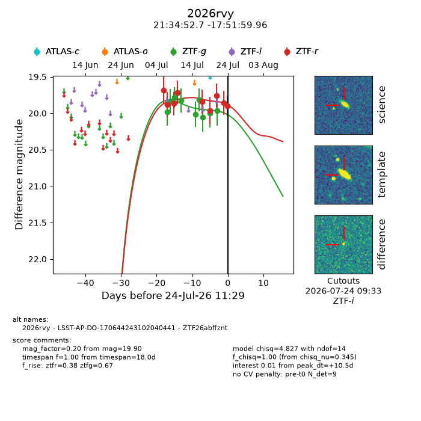
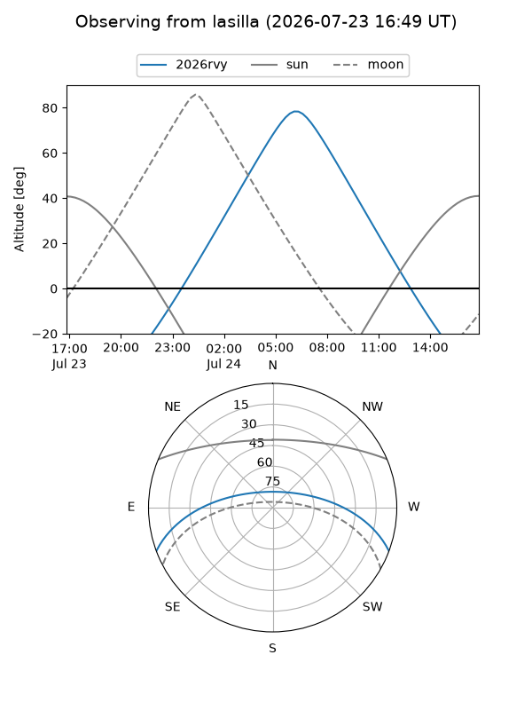
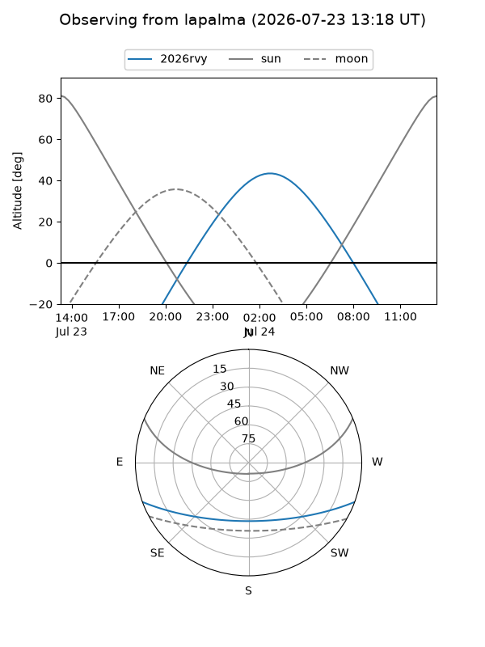
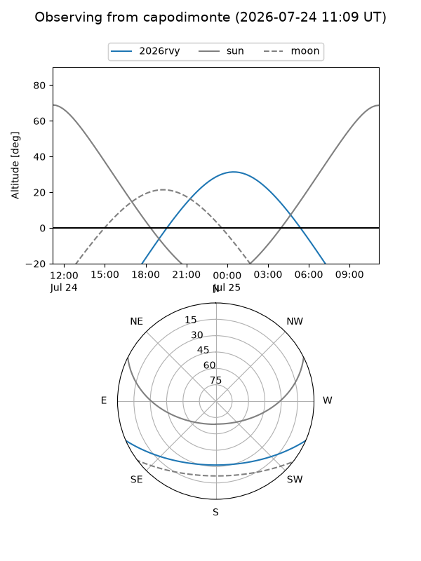
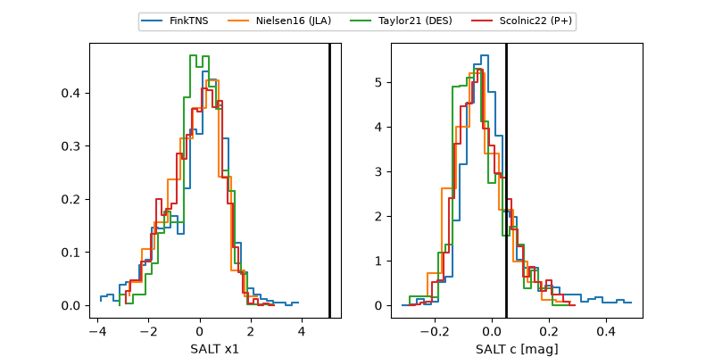

2026rvy
Target 2026rvy at 2026-07-24 11:31
Aliases and brokers:
FINK-ZTF: ztf.fink-portal.org/ZTF26abffznt
Lasair-ZTF: lasair-ztf.lsst.ac.uk/objects/ZTF26abffznt
ALeRCE-ZTF: alerce.online/object/ZTF26abffznt
YSE-PZ: ziggy.ucolick.org/yse/transient_detail/2026rvy
TNS name: wis-tns.org/object/2026rvy
Direct TNS query: direct search
alt names
ZTF26abffznt (ztf,fink_ztf)
2026rvy (tns,yse)
LSST-AP-DO-170644243102040441 (iau_lsst)
Coordinates:
equatorial (ra, dec) = 323.7194,-17.86666
equatorial (HMS+DMS) = 21:34:52.66,-17:51:59.96
galactic (l, b) = (33.7973,-43.95224)
Flags:
TNS type: nan
peak dt: +10.5
Photometry:
last ztfg=19.97, ztfr=19.90
10 ztfg, 9 ztfr detections
Lightcurve

Visibility



Additional plots
